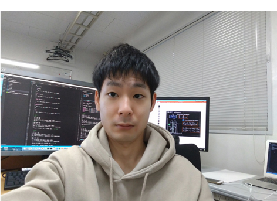

ABOUT

鈴木 雄貴 Yuki Suzuki
修士(工学)
東北大学大学院工学研究科ファインメカニクス専攻博士課程３年
生体流体力学分野 石川・大森／菊地研究室
Email: yuki.suzuki.q6(at)dc.tohoku.ac.jp
--- 学歴 ---
2013年4月 東京理科大学学理工学部機械工学科入学
2017年3月 東京理科大学学理工学部機械工学科卒業 学士(工学)
2017年4月 東北大学大学院工学研究科ファインメカニクス専攻博士前期課程入学
2019年3月 東北大学大学院工学研究科ファインメカニクス専攻博士前期課程修了 修士(工学)
2019年4月 東北大学大学院工学研究科ファインメカニクス専攻博士後期課程入学
WORKS
- 査読付原著論文
- How do C. elegans worms survive in highly viscous habitats? (2020).
Yuki Suzuki, Kenji Kikuchi, Keiko Tsuruta-Numayama, Takuji Ishikawa
Journal of Experimental Biology, 224, jeb.224691. - Particle selectivity of filtering by C. elegans (2019).
Yuki Suzuki, Kenji Kikuchi, Keiko Tsuruta-Numayama, Takuji Ishikawa
Theoretical & Applied Mechanics Letters, 9, 61-65.
- How do C. elegans worms survive in highly viscous habitats? (2020).
- 国際会議
- Yuki Suzuki, Kenji Kikuchi, Keiko Numayama-Tsuruta, Takuji Ishikawa, Pump Function of C. elegans Pharynx in Highly Viscous Environments
72nd APS Division of Fluid Dynamics, Seattle, U.S., November, 2019 - Yuki Suzuki, Kenji Kikuchi, Keiko Numayama-Tsuruta, Takuji Ishikawa, High Viscous Fluid Flow in C. elegans Pharynx.
The 16th International Conference on Flow Dynamics, Sendai, Japan, November, 2019 - Yuki Suzuki, Kenji Kikuchi, Keiko Numayama-Tsuruta, Takuji Ishikawa, Particle Selectivity of Filtering by C. elegans.
The 8th International Conference on Fluid Mechanics, Sendai, Japan, September, 2018.
- Yuki Suzuki, Kenji Kikuchi, Keiko Numayama-Tsuruta, Takuji Ishikawa, Pump Function of C. elegans Pharynx in Highly Viscous Environments
- 国内学会
- 鈴木雄貴，菊地謙次，沼山恵子，石川拓司,「線虫の餌捕食機能における餌粘性の影響」
日本機械学会 第30回バイオフロンティア講演会，霧島市，7月，2019年 - 鈴木雄貴，菊地謙次，沼山恵子，石川拓司,「線虫餌濃縮メカニズム解明のための口内流動計測」
日本機械学会 第31回バイオエンジニアリング講演会，郡山市立中央公民館・勤労青少年ホーム (郡山市)，12月，2018年 - 鈴木雄貴，菊地謙次，沼山恵子，石川拓司,「線虫口内の餌濃縮部における流れの可視化」
日本流体力学会 年会2018，大阪大学 (豊中市)，9月，2018年 - 鈴木雄貴，菊地謙次，沼山恵子，石川拓司,「線虫口器における餌濃縮機能の可視化計測」
日本機械学会東北支部 第53期総会・講演会，東北大学 (仙台市)，3月，2018年
- 鈴木雄貴，菊地謙次，沼山恵子，石川拓司,「線虫の餌捕食機能における餌粘性の影響」
- 奨学金
- 東北大学 グローバル萩博士学生奨学金 平成31年度採用，8月，2019年
- 東北大学 学際高等研究教育院 平成30年度修士研究教育院生採用，6月，2018年
ACCESS
| 住所 | 〒980-8579 宮城県仙台市青葉区荒巻字青葉6-6-01 ナノ医工学研究棟 |
|---|---|
| 電話番号 | 022-795-6958 |
| Emailアドレス | yuki.suzuki.q6@dc.tohoku.ac.jp |
| 営業時間 | 00:00-23:59 （定休日：年末年始） |
| アクセス | 青葉山駅出口から徒歩15分 仙台駅西口からタクシーで25分 |